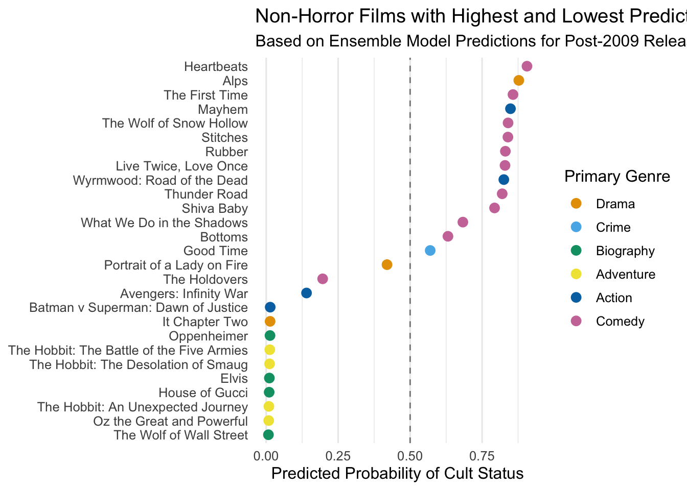

# predicttop_movies_post2009_preds$pred_prob_rf <-predict(rf_model, top_movies_post2009, type ="prob")[,2]top_movies_post2009_preds$pred_class_rf <-if_else(top_movies_post2009_preds$pred_prob_rf >0.351, 1, 0)# ensemble modeltop_movies_post2009_preds <- top_movies_post2009_preds %>%mutate(ensemble_prob = (pred_prob_logit + pred_prob_rf)/2)top_movies_post2009_preds$ensemble_class <-if_else(top_movies_post2009_preds$ensemble_prob >0.351, 1, 0)# also include key model selection stats and confusion matrix# also include clean mean model probably latex# also include confusion matrix for manual verificationtop_movies_post2009_preds_nohorror <- top_movies_post2009_preds %>%filter(genre1_Horror ==0)
Visualizing results
# cleaning datamanual_titles <-c("What We Do in the Shadows","Bottoms","Shiva Baby","Avengers: Infinity War","The Holdovers","Portrait of a Lady on Fire","Good Time")manual_rows <- top_movies_post2009_preds_nohorror %>%filter(title %in% manual_titles) %>%select(title, ensemble_prob, genre1, genre2)viz_data <- top_movies_post2009_preds_nohorror %>%select(title, ensemble_prob, genre1, genre2) %>%filter(!is.na(ensemble_prob)) %>%arrange(desc(ensemble_prob))top_n <-10bottom_n <-10viz_data <-bind_rows(slice_head(viz_data, n = top_n),slice_tail(viz_data, n = bottom_n), manual_rows) %>%distinct(title, .keep_all =TRUE) %>%# prevent duplicatesmutate(title = forcats::fct_reorder(title, ensemble_prob) )# vizokabe_ito <-c("#E69F00", # orange"#56B4E9", # sky blue"#009E73", # bluish green"#F0E442", # yellow"#0072B2", # blue"#CC79A7"# reddish purple)ggplot(viz_data, aes(x = ensemble_prob,y = title,color = genre1)) +geom_point(size =3) +geom_vline(xintercept =0.5, linetype ="dashed", alpha =0.5) +scale_color_manual(values = okabe_ito,name ="Primary Genre" ) +labs(title ="Non-Horror Films with Highest and Lowest Predicted Cult Status + Notable Cases",subtitle ="Based on Ensemble Model Predictions for Post-2009 Releases",x ="Predicted Probability of Cult Status",y =NULL ) +theme_minimal(base_size =12) +theme(legend.position ="right",panel.grid.major.y =element_blank() )

# write takeaways:# fitted mean model of llm_class_final ~ vote_average + popularity + log(budget) + log(roi) + runtime + genre1_Biography + genre1_Action + genre1_Comedy + genre1_Horror + genre1_Fantasy (will write this nicely in latex) with both a logit and random forest# withheld 30% of pre-2010 data from training to test models, random forest was marginally better but decided to utilize an ensemble model (average of both) for better prediction stability# talk about model selection/evaluation criteria: high AUC, decent kappa, good sensitivity and specificity# model heavily favors horror films due to the abundance of short, low budget found-footage style horror films with high ROIs# excluded primary genre=horror from final viz# takeaways: model dislikes biographies and adventure films, good at ignoring the box office hits, top films are mostly comedies, with quite a few comedy/horrors, many at the top do seem unconventional enough to become cult classics (heartbeats is about a french canadian love triangle, alps is a Greek psychological drama art film directed by Yorgos Lathimos (who has since gone on to direct very popular and well loved films like Poor Things and Bugonia), stiches is a comedy/horror killer clown movie), while others seem like generic comedy/romances or just unassuming# ones i added outside top/bottom 10: infinity war is a gut check/it had better be low, bottoms+good time+what we do in the shadows glad they got some type of score but expected higher, portrait of a lady on fire and holdovers have the qualities but are too popular and universally liked to be higher